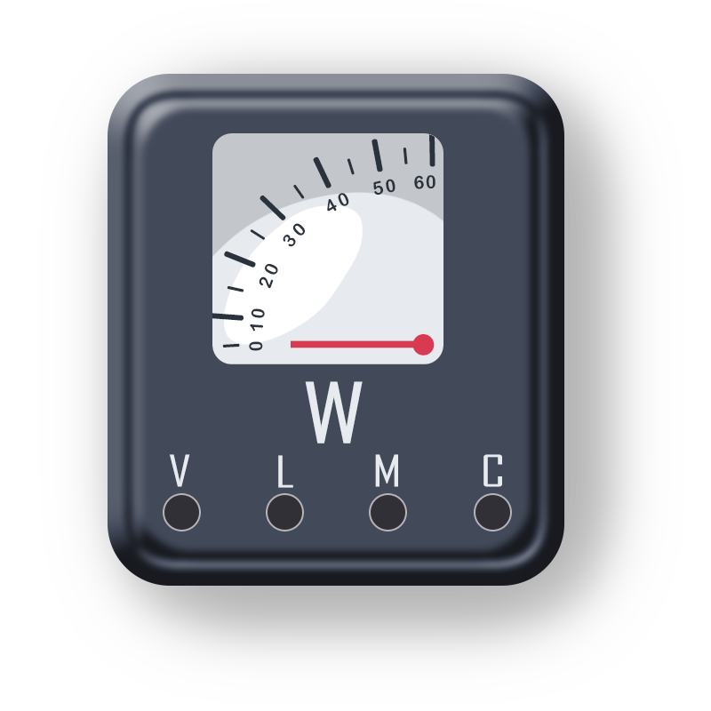

Instructions
Step 1:
The aim of this experiment is to get familiarized with the electrical devices.
Step 2:
Click on ‘Next’ Button to view the next electrical device.
Step 3:
Click on ‘Previous’ button to go back to previous electrical device.
Step 4:
Repeat Step 2 and 3 until you reach the end of the experiment.
Instructions
TO GET FAMILIARIZED WITH THE ELECTRICAL DEVICES.

Figure 1: Analog wattmeter
A wattmeter is a device that measure power, or the amount of energy being used, in a given space or system. In short it is used to measure active electric power.
There are two coils in wattmeter.
1. Current coil
2. Potential coil
Current coil is fixed coil and potential coil is movable coil
When the wattmeter is connected in the circuit to measure the power, the current coil carries load current and potential coil carries current proportional to the load voltage, due to currents in the coils, mechanical force exist between them. The result is that movable coil moves the pointer over the the scale. The pointer comes to reset at a position where deflecting torque
Deflecting torque TD is directly proportional to load power
It is a helpful device for comparing the power use of different systems, such as lamps and computers, and for measuring the power of systems that operate at power levels too low to be measured by other instruments. Wattmeter are used in the field of energy efficiency to measure the energy efficiency of building, appliances and other systems.
The working mechanism of a wattmeter is based on the principle that the amount of electricity consumed by an appliance is proportional to the power consumed by the appliance. Thus, an appliance that consumes more electricity will use more energy than a similar-sized appliance. The formula used for the calculation of power with a wattmeter is
P=VIcosӨ
Analog wattmeter:
The traditional analog wattmeter is an electro dynamic instrument. The device consists of a pair of fixed coils, known as current coil and a movable coil known as the potential coil.
The current coil are connected in series with the circuit, while the potential coil is connected in parallel. Also, on analog wattmeter, the potential coil carries a needle that moves over a scale to indicate the measurement. A current flowing through the current coil generates an electromagnetic field around the coil.
Digital wattmeter:
A modern digital wattmeter samples the voltage and current thousands of times a second. For each sample, the voltage is multiplied by the current at the same instant; the average over at least one cycle is the real power.
The real power divided by the apparent volt-amperes (VA) is the power factor. A computer circuit uses the sampled values to calculate RMS voltage, RMS current, VA, power (watts), power factor, and kilowatt-hours. The readings may be displayed on the device, retained to provide a log and calculate averages, or transmitted to other equipment for further use.
There are various type of wattmeter.
Electrodynamometer
Induction wattmeter